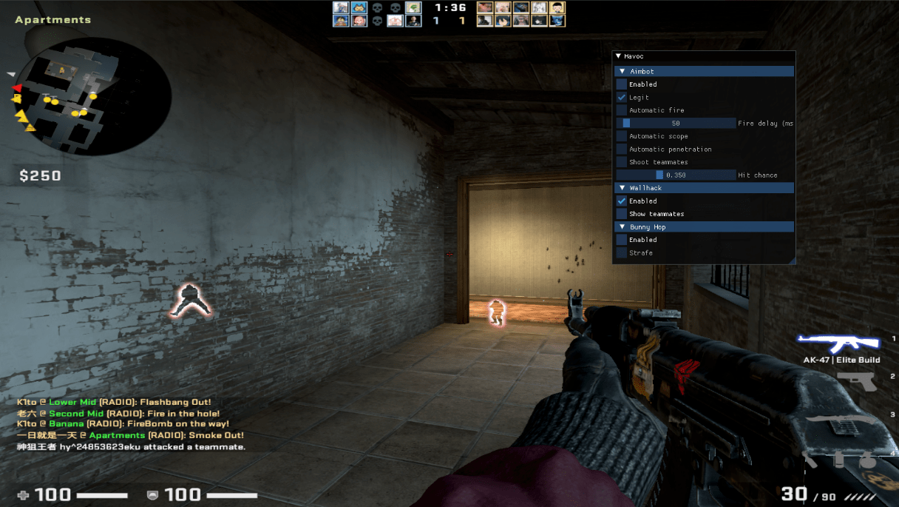

# Overview
| ID: | aesophor |
| Occupation: | Senior Product Developer @ Synology Inc. |
| Degree: | MS degree at Software Quality Laboratory, NYCU (Class of 2022) |
| Conference Talks: | HITCON 2022, SITCON 2019 |
| Certificates: | CE|H, TOEIC 950/990 |
# Experience
| Synology Inc. | Senior Product Developer (Storage Gateway Team), Jan. 2025 - Present |
| Product Developer (Storage Gateway Team), Jul. 2022 - Jan. 2025 | |
| Product Developer Summer Intern (File Protocols Team), Jul. 2019 - Sep. 2019 |
# Education
| National Yang Ming Chiao Tung University | Master of Computer Science and Engineering (2020 - 2022) |
| Taipei Municipal University of Education | Bachelor of Computer Science (2018 - 2020) |
| National Defense University | Information Management (2015 - 2018, Dropped out) |
# Research Area
- Filesystems
- Operating Systems
- Window Managers
- Symbolic Execution
- Automatic Exploit Generation
# Conference Talks
| HITCON 2022 | CRAX++: Modular Exploit Generator using Dynamic Symbolic Execution |
| SITCON 2019 | Crafting your own Tiling Window Manager using C++ and Xlib |
# Publications
- Wang Guan-Zhong and Huang Shih-Kun. “CRAXplusplus: Modular Exploit Generator using Symbolic Execution” (2022). [Thesis] [Slides]
# Graduate Weekly Meetings
- Return-to-csu: Bypassing 64-bit Linux ASLR + pwnable.tw De-ASLR
- Framing Signals: A Return to Portable Shellcode
- Devil is Virtual: Reversing Virtual Inheritance in C++ Binaries
- Symbolic Execution with SymCC
# Personal Side Projects
# valkyrie: A UNIX-like toy kernel built from scratch (AArch64)
Time： Feb. 2021 - Jul. 2021
Type： Semester project of NYCU OSC 2021
Role： Author; Maintainer
Tags： C/C++20, Assembly
Link： https://github.com/aesophor/valkyrie
A UNIX-like operating system written from scratch which runs on a real Raspberry Pi 3b+ (CPU: ARM-Coretex-A53).
- Self-made C++20 standard library (including functional, list, smart pointers, move semantics, perfect forwarding, concepts)
- Drivers (mini UART, Mailbox, SD Card Driver)
- A simple bootloader made with miniUART
- Timer interrupt, system calls
- Preemptive multi-tasking,
fork()+exec() - PMM: Buddy allocator + ptmalloc-flavored SLOB
- VMM: Supports CoW
fork() - Filesystems: FAT32, /dev, /proc, /tmp
- VFS abstraction layer
- Userland system software: sh, login, cat, ls, cp, mkdir, mknod, mount, …
# CRAXplusplus: modular exploit generator using symbolic execution
Time： Aug. 2021 - Jun. 2022
Type： Master Thesis
Role： Author; Maintainer
Tags： C/C++17, S2E, pwntools
Link： github.com/SQLab/CRAXplusplus
Being inspired by AFL++, the exploit generator CRAX++ is CRAX with x86_64 ROP techniques, s2e 2.0 upgrade, code selection, I/O states, dynamic ROP, and more. Given a x86_64 binary program and a PoC input, our system leverages dynamic symbolic execution (i.e. concolic execution) to collect the path constraints determined by the PoC input, add exploit constraints to the crashing states, and query the constraint solver for exploit script generation. Our system supports custom exploitation techniques and modules with the aim of maximizing its extensibility. We implement several binary exploitation techniques in our system, and design two ROP payload chaining algorithms to build ROP payload from multiple techniques.
# wmderland: X11 tiling window manager using space partitioning trees
Time： Dec. 2018 - Present
Type： Personal Side project
Role： Author; Maintainer
Tags： C/C++14, Xlib
Link： github.com/aesophor/wmderland
A minimal i3-gaps, written in C++ and Xlib. As of March 11, 2023, this project has been starred 391 times on GitHub.
- Configurable workflow (keyboard, mouse, or both)
- i3-like config; easy to use!
- 9 Workspaces (static)
- Fullscreen toggle
- Floating toggle
- Gaps & borders
- Window focus follows mouse
- Smart floating
- Supports a subset of EWMH
- Tiny IPC Client
# vigilante: pixel-art vampire metroidvania game
時間： Apr. 2019 - Present
類型： Personal side project
角色： Author; Maintainer
技術： C/C++17, cocos2d-x, box2d
開源： github.com/aesophor/vigilante
Vigilante is a 2D side-scrolling single-player RPG which offers gaming experience similar to Maplestory, Castlevania and The Elder Scrolls Series. Vigilante features an intriguing vampire storyline, allowing the player to grow from a nobody eventually to a vampiric lord. It also provides plenty of maps, enemies, magics, and equipments to discover.
Similar to The Elder Scrolls series, the player can team up with certain NPCs and go adventure together. The player can either take side with the vampire hunters and save the world from the vampires’ plot, or join the vampires and bring destruction to the world. The storyline will be tailored based on the player’s playstyle.
# Open Source Contributions
- S2E/s2e: Implemented unconditional state fork (similar to VM snapshot), refactor and fixed minor bugs.
- google/glog: Implemented automatic removal of outdated logs, fixed race condition in LOG_EVERY_N macros, etc.
# Entertainment
# Gaming
- CS:GO: I mostly play in casual mode (ID:
eku⚡️hy24853623) with a cheat I made myself. - Skyrim SE: I’ve been playing Skyrim for ~10 years. Currently playing a heavily modded version of Skyrim AE with my custom ENB preset, on a M1 Pro MacBook Pro, via a legally purchased copy of CrossOver 22.1.
|  |  |
# Sketching
The following (replicated) artworks are created on an iPad Pro 2020 with Adobe Fresco.

# Calligraphy (Traditional Chinese)